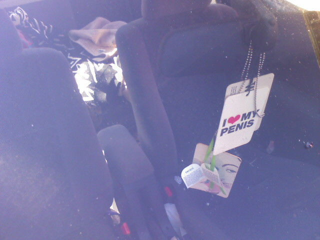
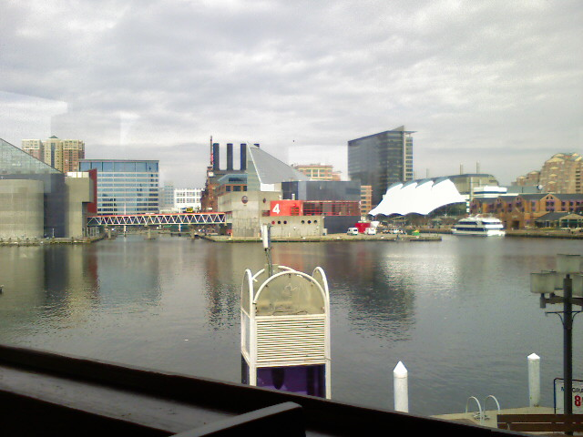
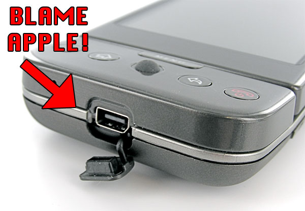
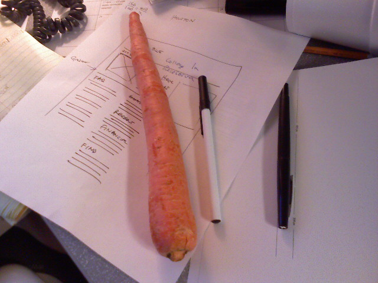
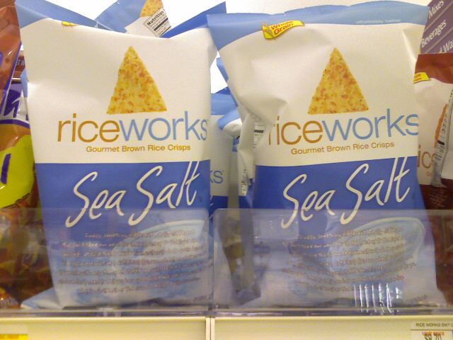

I Heart My Penis

Interesting rear-view ornament.


Kristina and I are spending Valentine’s Day in Baltimore. First up is lunch at the Rusty Scupper in the inner harbor. The view from our table is exquisate.
I stepped out of the office and saw this beautiful color in the sky. The weather is equally stunning with the high in the upper 60’s today. Man if it could stay at this temperature forever that would be fine by me.
I was reading the latest post on Daring Fireball about Apple, Google, and Palm when I read the following:
…the other feature that Apple objected to was using a standard headphone jack. Apple apparently owns a patent on controlling software using buttons connected by a standard 3.5mm headphone jack (at least for music and video playback controls), and would not grant Google a license to the patent. Hence the G1’s use of a proprietary ExtUSB port rather than a standard 3.5mm headphone jack.
So let me get this straight? No cell phone company is going to incorporate a standard 3.5mm headphone jack anytime soon due to the possibility of feeling the wrath from Apple’s lawyers? What has the world come to? How come one company can lock down the use of a jack forcing others to offer a pointless dongle to get around the issue? What would happen if the dongle was built into the phone so while not technically a straight 3.5mm jack but would appear like one to a normal person? Would this be allowed?

This pales in comparison to Apple’s dubious multi-touch patent.
Now I’m all for taking a crack at challenging problems, but being forced to work around an issue because someone holds a patent on it is holding back innovative ideas.
Have you ever waned to turn your fridge into a graphic designers computer screen? These $25 magnet kits from meninos.us will transform any plain, metallic surface into an industry-standard graphics app. There’s a kit with Adobe Photoshop panels and a kit with Adobe Illustrator panels so no graphic designer will feel left out. Because if you spend most of your day in front of the interface, getting up for a quick snack might seem a little confusing without the familiar screen.

This reminds me of my first, and only, drawing class in college. I’m not much of a physical media guy so when I made a mistake on my sketch pad I immediately made a gesture to undo. It took me a second to realize I wasn’t in front of Photoshop. I suppose these magnets wouldn’t help, but that’s besides the point.
(via s2999.com)

This massive carrot is nearly two pens long. Now time to eat it.
I don’t know if you can see them in this picture but there are duck tracks on the ice in the C&O canal as I slip and slide my way into work.
Grocery shopping got a little bit smarter and a whole lot more fun at a nearby Giant. After a day of errands at Arundel Mills mall, Kristina and I stopped at the Giant off of New Hampshire Ave. This store has the Scan It gun which lets shoppers bag their groceries and calculate their total as they shop. We didn’t see a lot of people using them but we found it easy to use and quite handy.
When you first walk in to the store you see this…

This is where you scan your bonus card, pick up a Scan It gun, and grab some plastic bags to fill while you shop. Before you put an item in your cart you simply hold the yellow button down and scan the barcode with the gun. It shows you the price of the item and adds it to your total. Removing an item is as simple as selecting Remove and then scanning the item again.

Scanning fruits and vegetables is a little tricky since they don’t have barcodes on them. There are produce scales around to select and weigh your produce and then a printer prints out a barcode sticker which you can scan.

At the end of your trip you scan a special barcode at the register and hand the scanner to the cashier. Then you just pay and off you go!
The only negative aspect of the process is the Scan It device displays specials with a loud cash register sound every so often. Most of the specials weren’t relevant to what we were shopping for. The brochure says “there are extra savings exclusively with SCAN IT!” but I didn’t notice anything. Kristina and I shop with a list which means we tend to ignore anything that isn’t on it.

Technology like this is a good stop gap until RFID technology overtakes the old fashioned barcode. I think within the next 10 years, there will be a console on every grocery cart that tracks what items go into the cart as well as helping shoppers identify where things are located. Having more information while I shop is a welcome improvement. This eliminates any confusion about pricing and helps us stay within our grocery budget. Now there will be no more surprises at the checkout.
I hope this technology makes it to the Giant where we usually shop at, though we might just go a little bit further to this Giant for our weekly grocery trips.

Kristina and I are doing our weekly grocery shopping when I spotted this clean package design in the chip aisle. I really like the minimalistic packaging but I had no need for rice chips. This Giant also has something special about it which I’ll blog about when I get home.
Have you ever needed a diabolical central command console like the bad guys always use in the movies? Then Henchman’s Helper will be a big help to you.

While it may look like something out of a sci-fi novel, this site is actually useful. All the images are from live web cams all over the world or animated weather maps which are brought in dynamically using JavaScript. It’s the perfect site to leave open on a second monitor so you can check in with unsuspecting victims at a glance. Now if only we had a direct line to the presidents office to demand a ransom of $100 billion dollars!
P.S. Nice touch with the laser knob.